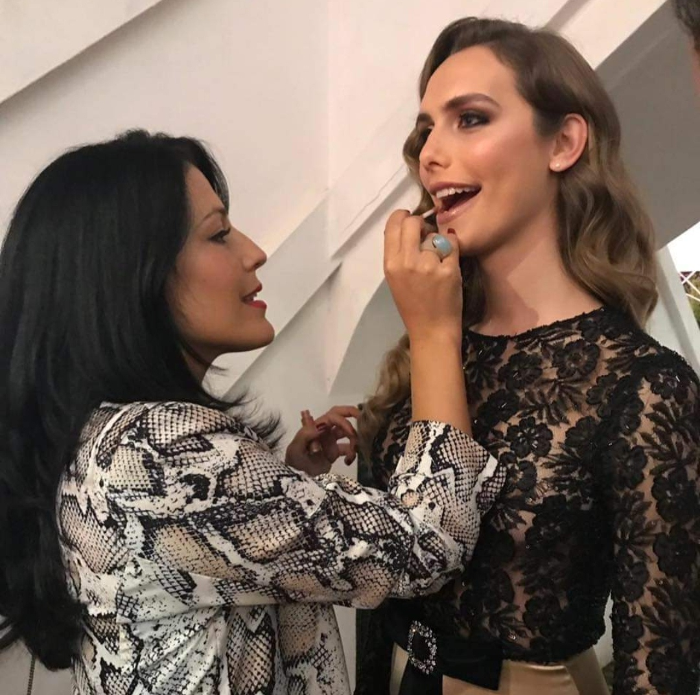
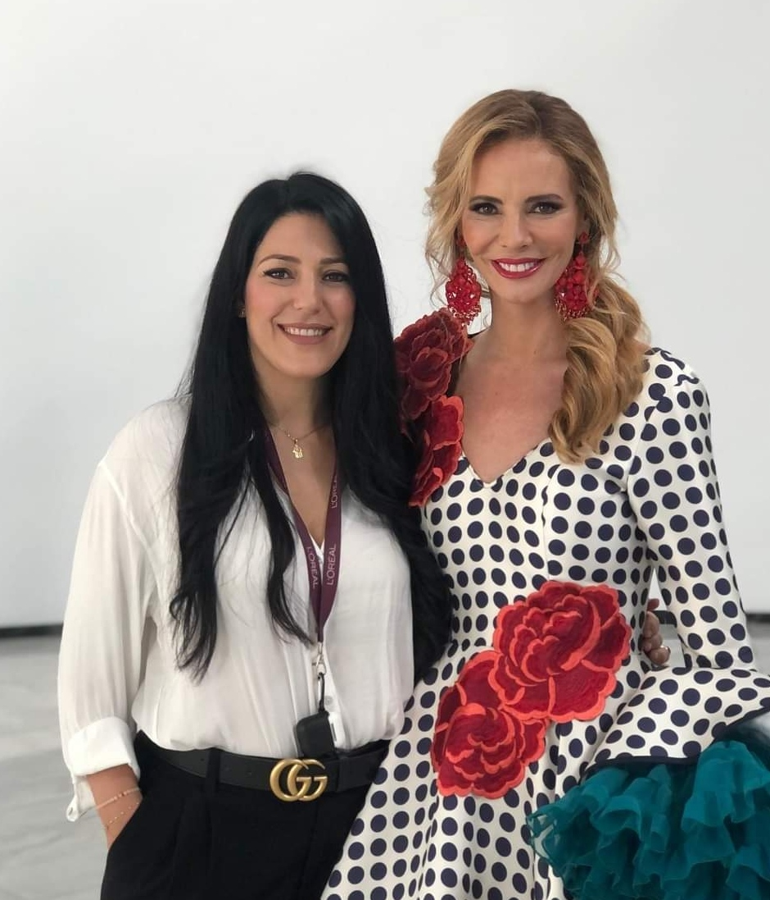
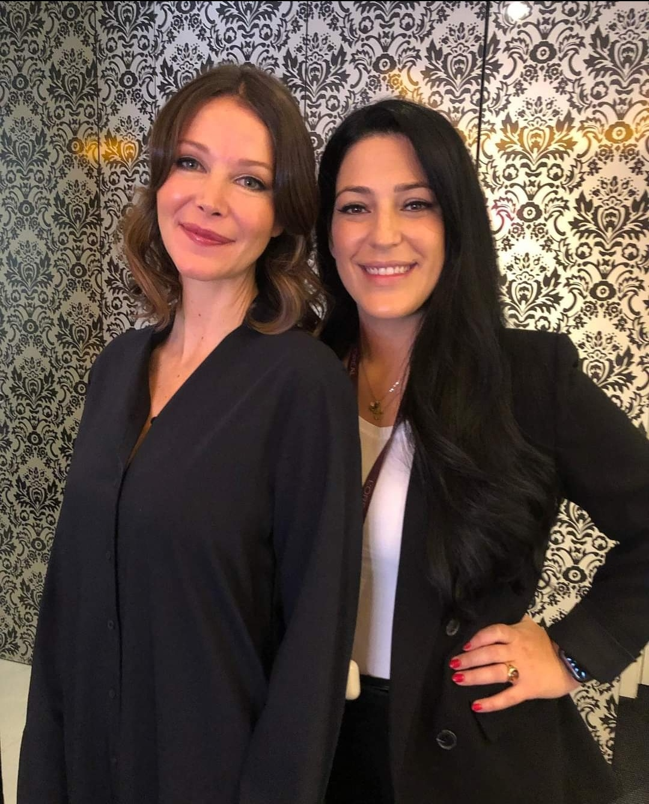
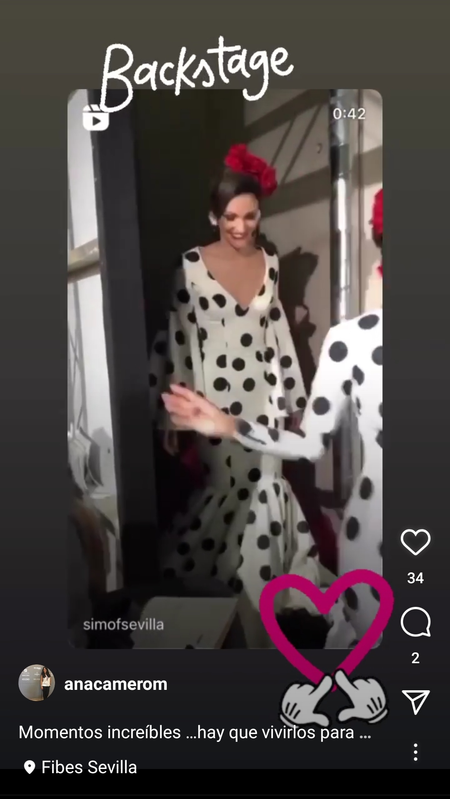

EVENTO: Pasarela SIMOF 2022
Muy ilusionada y sorprendida con la oportunidad, siempre había formado parte del equipo
de Paco Cerrato desde 2005 para este evento internacional. De esa manera, cuando Cerrato
decidió que no continuaría, ofrecí hacerme cargo de los peinados
del Salón y me aceptaron la candidatura. Desde ese instante creé mi propio equipo de trabajo
y me puse manos a la obra para superar este reto que ha sido para mí, un sueño realizado.
Pincha la imagen abajo a la derecha para ir al Video desde el Backstage en Instagram
   